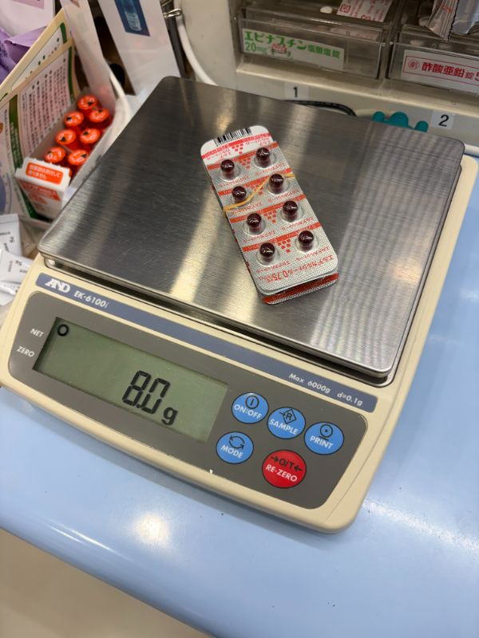
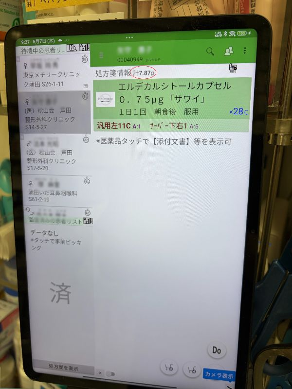

01
Picking Goでのピッキング
処方箋のバーコードを読み取り、指示された医薬品を棚から集めます。集める際、医薬品のGS1コード（バーコード）を端末で読み取り、照合を行います。
Picking Goを用いた正確なピッキングと、medimonitor（メディモニター）を活用した監査業務の流れを解説します。
処方箋のバーコードを読み取り、指示された医薬品を棚から集めます。集める際、医薬品のGS1コード（バーコード）を端末で読み取り、照合を行います。
ピッキングが終わった医薬品を監査台の秤（はかり）に載せ、medimonitorを使用して監査を行います。
あらかじめ登録された医薬品の重量データ等をもとに、ピッキングした薬剤の種類と数量が処方箋と一致しているかをシステムがチェックします。

ピッキングが完了したカゴや医薬品を、medimonitorの秤（はかり）の上に載せます。

あらかじめ登録された重量データと一致しているか、画面上の表示（OK/一致など）を確認します。
全てが一致したら完了操作を行い、お薬を投薬袋へセットする準備へ進みます。